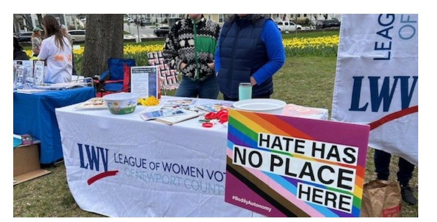

Join us for forums, meetings, and community events throughout Newport County.

April 23, 2026 • 5:30 PM
Location: Newport Playhouse or Zoom
Join fellow League members for our quarterly gathering. We'll discuss current issues, plan upcoming activities, and hear from a guest speaker on topics important to Newport County voters.
May 8, 2026 • 5:00 PM
Location: VFW Hall, Portsmouth, RI
Join fellow League members as we celebrate and honor all elected women officials, at both state and local levels, throughout Newport County.
Guest Speaker: Dr. Kelly Armstrong, President of Salve Regina University
The League hosts regular meetings and events throughout the year. All members and interested community members are welcome.
Schedule: Announced in advance
Time: 5:30 PM
Regular gatherings for members and the public to discuss current issues and plan activities. Locations rotate around the areas in Newport County.
Time: 4:30 PM - 6:00 PM
Location: Johnny's at Wyndam, 240 Aquidneck Ave, Middletown
Join fellow League members as they wrap their week up with time for relaxation, a libation and conversation. Cash bar and free appetizers.
RSVP: Let us know if you'll be there so we can plan for appetizers: lwvnewportcounty@gmail.com
Schedule: First Wednesday
Time: 1:00 PM
The Officers and Board of Directors meet to guide League activities. Members are welcome to observe these meetings.
The League hosts nonpartisan candidate forums before primary and general elections, giving voters the opportunity to hear directly from candidates running for local and state office.
2026 Forum Schedule:
Forums will be announced as election dates approach. Check back for updates or follow us on Facebook for the latest information.
Look for the League at community events throughout Newport County where we register voters, provide election information, and engage with our neighbors about the importance of civic participation.
Time: 4:30 PM - 6:00 PM
Location: Johnny's at Wyndam, 240 Aquidneck Ave, Middletown
Join fellow League members as they wrap their week up with time for relaxation, a libation and conversation. Cash bar and free appetizers.
RSVP: Let us know if you'll be there so we can plan for appetizers: lwvnewportcounty@gmail.com
Follow us on Facebook for event updates and important election information.
Follow Us